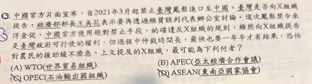

分享原卷｜第15題
完整原題
中國官方片面宣布，自2021年3月起禁止臺灣鳳梨進口至中國。臺灣是否向X組織提告，經濟部部長王美花表示要再透過經貿談判代表辦公室討論，這次鳳梨禁令來得倉促，中國官方使用絕對禁止手段，的確違反X組織的規則，雖然向X組織提告是臺灣政府可行使的權利，但過程中仲裁時間長，最快也要一年半才有結果，恐怕對農民的救助緩不濟急。上文提及的X組織，最可能為下列何者？
(A) WTO（世界貿易組織）
(B) APEC（亞太經濟合作會議）
(C) OPEC（石油輸出國組織）
(D) ASEAN（東南亞國家協會）
先想一想，再查看答案、解說與原圖
原卷作答：B；紅筆訂正A
正確答案：A，WTO（世界貿易組織）。
逐項解析
| 選項與原句 | 判讀 | 句意與判斷理由 |
|---|---|---|
| (A) WTO（世界貿易組織） | 應選 | 有貿易規則與正式爭端解決制度，符合題文。 |
| (B) APEC（亞太經濟合作會議） | 不選 | 是自願合作的論壇，功能與本題正式貿易爭端程序不同。 |
| (C) OPEC（石油輸出國組織） | 不選 | 主要關於石油輸出國合作，不是本題的組織。 |
| (D) ASEAN（東南亞國家協會） | 不選 | 是東南亞區域組織，不符合本題臺灣與中國的貿易爭端制度線索。 |
詳細說明與解題步驟
【關鍵是貿易規則與爭端解決】
題文談的是進口禁令、貿易規則及正式處理爭端的程序，因此選WTO。不要只看到「亞太地區」或「經濟合作」就選APEC，要比較題目描述的組織功能。
【為什麼不是APEC】
APEC採自願、共識及不具強制約束力的合作方式，主要促進經濟合作與交流；WTO則有正式的貿易爭端解決制度。本題所說的提出貿易爭端，應對應WTO。
OPEC主要是石油輸出國的組織，ASEAN是東南亞區域組織，都不符合本題。
【原對話追問：臺灣有加入WTO嗎】
有。臺灣自2002年1月1日起成為WTO會員，以「臺灣、澎湖、金門及馬祖個別關稅領域」參與，WTO會員資料以Chinese Taipei列示。不是只有主權國家才能成為WTO會員。WTO官方仍列有臺灣的會員資料，不能把其他國際組織的歷史誤認為曾遭WTO除名。
【題文與制度要分清】
題文保留當時報導對禁令及處理時間的說法；辨識出WTO，不等於已證明某案件的裁決結果。提出爭端也不代表必然勝訴、立即獲賠或自動制裁，仍須依程序處理。
核對註記：已依原卷或完整文字核對並獨立解題；對應教材課次未確認，歸綜合。
原圖（僅本題）
